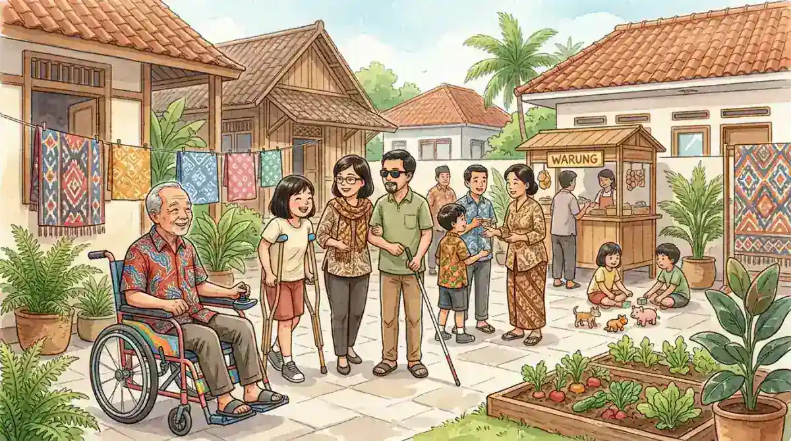

Difabel adalah istilah yang berasal dari singkatan bahasa Inggris differently abled, yang berarti orang dengan kemampuan berbeda. Istilah ini diperkenalkan untuk menggantikan kata "cacat" atau "penyandang cacat" yang dianggap merendahkan dan mengandung stigma negatif. Di Indonesia, diperkirakan terdapat lebih dari 22 juta penyandang disabilitas menurut data Survei Sosial Ekonomi Nasional (Susenas), dan sebagian besar dari mereka masih menghadapi berbagai hambatan dalam mengakses pendidikan, pekerjaan, serta layanan publik.
Di Yayasan Ukhuwah Kaffah Amanatullah (YUKA), kami berkomitmen mendampingi penyandang disabilitas, khususnya anak berkebutuhan khusus, melalui Sekolah Inklusi Taruna Imani di Sleman, Yogyakarta. Dari pengalaman bertahun-tahun bekerja langsung dengan difabel, kami memahami bahwa setiap individu memiliki potensi yang luar biasa apabila diberikan kesempatan dan dukungan yang tepat. Artikel ini kami susun untuk memberikan pemahaman yang utuh tentang difabel, mulai dari pengertian, jenis-jenis, hak hukum, hingga cara mendukung mereka secara nyata.
Dalam Islam, setiap manusia memiliki kedudukan yang setara di hadapan Allah SWT. Perbedaan fisik atau kemampuan bukanlah ukuran kemuliaan seseorang. Allah SWT berfirman dalam QS. Al-Hujurat ayat 13: "Sesungguhnya yang paling mulia di antara kamu di sisi Allah ialah orang yang paling bertakwa." Ayat ini menegaskan bahwa difabel memiliki hak dan martabat yang sama dengan siapa pun.
Daftar Isi
- Pengertian Difabel dan Perbedaannya dengan Disabilitas
- Jenis-Jenis Difabel di Indonesia
- Hak-Hak Difabel Menurut UU No. 8 Tahun 2016
- Tantangan yang Dihadapi Difabel di Indonesia
- Cara Mendukung dan Memberdayakan Difabel
- Peran Yayasan dan Lembaga Sosial bagi Difabel
- Pengalaman YUKA Mendampingi Penyandang Disabilitas
- FAQ Seputar Difabel
Pengertian Difabel dan Perbedaannya dengan Disabilitas
Difabel adalah akronim dari differently abled atau different ability, yang secara harfiah berarti "berkemampuan berbeda". Istilah ini pertama kali dipopulerkan di Indonesia pada awal tahun 2000-an oleh para aktivis dan akademisi yang menilai bahwa kata "cacat" atau "penyandang cacat" terlalu merendahkan. Dengan menyebut seseorang sebagai difabel, penekanannya bergeser dari keterbatasan menuju perbedaan kemampuan yang dimiliki setiap individu.
Sementara itu, istilah disabilitas berasal dari bahasa Inggris disability, yang merujuk pada keterbatasan fungsi fisik, mental, intelektual, atau sensorik dalam jangka waktu lama. Dalam konteks hukum Indonesia, istilah resmi yang digunakan adalah "penyandang disabilitas" sebagaimana tercantum dalam UU No. 8 Tahun 2016 tentang Penyandang Disabilitas.
Lalu, apa perbedaan difabel dan disabilitas? Secara substansi, keduanya merujuk pada kelompok yang sama. Perbedaannya terletak pada perspektif:
- Difabel menekankan sudut pandang positif bahwa seseorang memiliki kemampuan yang berbeda, bukan tidak mampu sama sekali
- Disabilitas merupakan istilah formal dan legal yang digunakan dalam peraturan perundang-undangan untuk mendeskripsikan keterbatasan fungsi
- Penyandang cacat adalah istilah lama yang kini dianggap tidak layak digunakan karena mengandung konotasi negatif
Perlu Diketahui
Meskipun istilah "difabel" lebih ramah dan humanis, dalam dokumen resmi pemerintah dan peraturan perundang-undangan, istilah yang digunakan tetap "penyandang disabilitas". Kedua istilah ini bisa digunakan secara bergantian dalam konteks komunikasi sehari-hari, selama dilandasi rasa hormat dan penghargaan terhadap individu yang bersangkutan.
Pergeseran istilah dari "cacat" ke "difabel" dan "penyandang disabilitas" bukan sekadar perubahan bahasa. Pergeseran ini mencerminkan perubahan paradigma yang mendasar, yaitu dari model medis (yang memandang disabilitas sebagai masalah individu yang harus "disembuhkan") menuju model sosial (yang memandang bahwa hambatan utama difabel bukan berasal dari kondisi mereka, melainkan dari lingkungan dan masyarakat yang belum inklusif).
Jenis-Jenis Difabel di Indonesia
Berdasarkan UU No. 8 Tahun 2016 tentang Penyandang Disabilitas, difabel di Indonesia dikelompokkan ke dalam beberapa kategori. Memahami jenis-jenis difabel sangat penting agar dukungan yang diberikan tepat sasaran dan sesuai kebutuhan masing-masing individu.
1. Disabilitas Fisik
Disabilitas fisik merujuk pada gangguan fungsi gerak, baik yang bersifat bawaan lahir maupun yang disebabkan oleh penyakit atau kecelakaan. Contohnya meliputi lumpuh, amputasi, kelumpuhan otak (cerebral palsy), dan kondisi lain yang memengaruhi kemampuan mobilitas. Difabel dengan disabilitas fisik membutuhkan aksesibilitas berupa jalan landai, kursi roda, dan fasilitas publik yang ramah bagi pengguna alat bantu gerak.
2. Disabilitas Intelektual
Disabilitas intelektual adalah kondisi di mana seseorang memiliki tingkat kecerdasan di bawah rata-rata (IQ di bawah 70) disertai keterbatasan dalam perilaku adaptif. Kondisi ini meliputi tunagrahita ringan, sedang, dan berat. Difabel dengan disabilitas intelektual tetap mampu belajar dan berkembang, terutama melalui program pemberdayaan yang fokus pada keterampilan hidup sehari-hari.
3. Disabilitas Mental
Disabilitas mental mencakup gangguan fungsi pikir, emosi, dan perilaku yang bersifat jangka panjang. Kondisi ini meliputi gangguan bipolar, depresi berat, gangguan kecemasan, skizofrenia, dan kondisi psikososial lainnya. Difabel dengan disabilitas mental memerlukan dukungan kesehatan jiwa yang berkelanjutan dan lingkungan yang bebas dari stigma.
4. Disabilitas Sensorik
Disabilitas sensorik melibatkan gangguan pada fungsi panca indra, terutama penglihatan dan pendengaran. Tunanetra (gangguan penglihatan) dan tunarungu (gangguan pendengaran) termasuk dalam kategori ini. Difabel sensorik membutuhkan alat bantu khusus seperti huruf Braille, bahasa isyarat (BISINDO), alat bantu dengar, dan teknologi asistif lainnya.
5. Disabilitas Ganda atau Multi
Disabilitas ganda terjadi ketika seseorang memiliki dua atau lebih jenis disabilitas secara bersamaan. Misalnya, seseorang yang mengalami tunanetra sekaligus tunarungu, atau seseorang dengan disabilitas fisik sekaligus disabilitas intelektual. Difabel dengan kondisi ganda memerlukan pendekatan pendampingan yang lebih komprehensif dan terpadu.

Hak-Hak Difabel Menurut UU No. 8 Tahun 2016
Indonesia telah meratifikasi Konvensi PBB tentang Hak-Hak Penyandang Disabilitas (Convention on the Rights of Persons with Disabilities/CRPD) melalui UU No. 19 Tahun 2011. Sebagai tindak lanjut, pemerintah menerbitkan UU No. 8 Tahun 2016 tentang Penyandang Disabilitas yang menjamin berbagai hak difabel secara komprehensif.
Berikut adalah hak-hak utama penyandang disabilitas yang dijamin oleh undang-undang:
Hak atas Pendidikan
Setiap difabel berhak mendapatkan pendidikan yang bermutu pada satuan pendidikan di semua jenis, jalur, dan jenjang pendidikan secara inklusif dan khusus. Sekolah tidak boleh menolak peserta didik difabel. Pemerintah wajib menyediakan akomodasi yang layak, termasuk guru pendamping khusus, kurikulum yang dimodifikasi, dan sarana prasarana yang aksesibel. Sistem pendidikan inklusi menjadi salah satu pilar utama dalam mewujudkan hak ini.
Hak atas Pekerjaan
UU No. 8 Tahun 2016 menetapkan kuota pekerja difabel di instansi pemerintah sebesar minimal 2% dan di perusahaan swasta sebesar minimal 1%. Difabel berhak mendapatkan upah yang sama untuk pekerjaan yang sama nilainya, serta berhak atas lingkungan kerja yang aksesibel dan non-diskriminatif.
Hak atas Aksesibilitas
Difabel berhak atas aksesibilitas di fasilitas publik, baik fisik maupun non-fisik. Ini mencakup jalan landai (ramp), lift yang aksesibel, jalur pemandu (guiding block), toilet khusus, transportasi umum yang ramah disabilitas, serta aksesibilitas digital pada situs web dan aplikasi.
Hak atas Kesehatan dan Jaminan Sosial
Penyandang disabilitas berhak mendapatkan pelayanan kesehatan yang bermutu, termasuk rehabilitasi medis, alat bantu kesehatan, dan jaminan kesehatan nasional. Pemerintah juga wajib menyediakan jaminan sosial bagi difabel yang membutuhkan.
Hak Politik dan Hukum
Difabel memiliki hak penuh untuk berpartisipasi dalam kehidupan politik, termasuk hak memilih dan dipilih dalam pemilihan umum. Tempat pemungutan suara harus aksesibel, dan penyelenggara pemilu wajib menyediakan akomodasi bagi pemilih difabel.
"Negara menjamin kelangsungan hidup setiap warga negara, termasuk para penyandang disabilitas yang mempunyai kedudukan hukum dan memiliki hak asasi manusia yang sama sebagai Warga Negara Indonesia." - Konsiderans UU No. 8 Tahun 2016
Tantangan yang Dihadapi Difabel di Indonesia
Meskipun hak-hak difabel telah dijamin oleh undang-undang, kenyataan di lapangan masih menunjukkan berbagai tantangan yang dihadapi penyandang disabilitas di Indonesia. Berdasarkan pengalaman kami di YUKA mendampingi difabel selama bertahun-tahun, berikut adalah tantangan utama yang masih perlu diatasi.
Stigma dan Diskriminasi Sosial
Stigma negatif terhadap difabel masih mengakar kuat di sebagian masyarakat Indonesia. Banyak orang yang masih memandang disabilitas sebagai "kutukan", "hukuman", atau "aib keluarga". Stigma ini menyebabkan difabel dikucilkan dari pergaulan, disembunyikan oleh keluarga, dan tidak diberikan kesempatan untuk berpartisipasi dalam kehidupan bermasyarakat. Padahal, pandangan semacam ini bertentangan dengan ajaran Islam yang menjunjung tinggi kesetaraan setiap manusia.
Keterbatasan Akses Pendidikan
Data Kementerian Pendidikan menunjukkan bahwa baru sekitar 18% anak difabel usia sekolah yang mendapatkan akses pendidikan formal. Banyak sekolah yang masih menolak menerima siswa difabel karena keterbatasan fasilitas, tenaga pendidik khusus, dan pemahaman tentang pendidikan inklusi. Peran orang tua dalam memperjuangkan akses pendidikan bagi anak difabel sangat penting untuk mengatasi tantangan ini.
Infrastruktur yang Belum Aksesibel
Sebagian besar fasilitas publik di Indonesia belum memenuhi standar aksesibilitas bagi difabel. Trotoar tanpa jalan landai, gedung tanpa lift yang aksesibel, transportasi umum yang sulit diakses, dan minimnya jalur pemandu di ruang publik menjadi hambatan nyata bagi mobilitas penyandang disabilitas sehari-hari.
Kesempatan Kerja yang Terbatas
Meskipun undang-undang mewajibkan kuota pekerja difabel, implementasinya masih sangat rendah. Banyak perusahaan yang belum memenuhi ketentuan ini karena kurangnya kesadaran, prasangka terhadap produktivitas difabel, dan ketidaktersediaan lingkungan kerja yang aksesibel. Akibatnya, tingkat pengangguran di kalangan difabel jauh lebih tinggi dibandingkan populasi umum.

Cara Mendukung dan Memberdayakan Difabel
Membangun masyarakat yang inklusif bagi difabel memerlukan peran aktif dari semua pihak. Berikut adalah langkah-langkah konkret yang dapat dilakukan untuk mendukung dan memberdayakan penyandang disabilitas:
1. Mengubah Cara Pandang dan Menghilangkan Stigma
Langkah pertama dan paling mendasar adalah mengubah cara pandang terhadap difabel. Berhenti menggunakan istilah yang merendahkan, memperlakukan difabel dengan hormat dan setara, serta mengedukasi lingkungan sekitar tentang hak dan potensi penyandang disabilitas. Inklusi sosial dimulai dari kesadaran bahwa perbedaan kemampuan bukanlah kekurangan, melainkan keberagaman yang memperkaya masyarakat.
2. Mendukung Pendidikan Inklusif
Pendidikan inklusif memungkinkan anak difabel belajar bersama anak-anak pada umumnya dalam satu lingkungan yang sama. Dukungan terhadap pendidikan inklusif bisa berupa advokasi kepada sekolah agar menerima siswa difabel, membantu penyediaan guru pendamping khusus, atau berdonasi kepada yayasan sosial yang mengelola sekolah inklusi seperti YUKA.
3. Menyediakan Pelatihan Keterampilan dan Vokasi
Pemberdayaan ekonomi merupakan kunci kemandirian difabel. Program pelatihan keterampilan hidup, vokasi, dan kewirausahaan dapat membantu difabel menjadi produktif dan mandiri secara finansial. Di YUKA, kisah Mas Ilham yang mandiri melalui usaha telur asin adalah bukti nyata bahwa difabel mampu berwirausaha dengan pendampingan yang tepat.
4. Memastikan Aksesibilitas Lingkungan
Setiap individu dapat berkontribusi memastikan aksesibilitas di lingkungan masing-masing. Hal sederhana seperti tidak menghalangi jalur difabel, memastikan tempat usaha memiliki jalan landai, menyediakan informasi dalam format yang aksesibel, dan mendukung kebijakan aksesibilitas di lingkungan kerja sudah merupakan kontribusi yang berarti.
5. Berpartisipasi dalam Kegiatan Sosial dan Donasi
Bergabung sebagai relawan, memberikan donasi, atau membantu menyebarkan informasi tentang hak-hak difabel adalah cara konkret untuk berkontribusi. Banyak lembaga sosial yang membutuhkan dukungan untuk menjalankan program pendampingan bagi penyandang disabilitas. Untuk memastikan donasi Anda tersalurkan dengan tepat, penting untuk memilih lembaga yang transparan. Baca panduan kami tentang transparansi donasi dan cara memilih yayasan terbaik.
Peran Yayasan dan Lembaga Sosial bagi Difabel
Yayasan dan lembaga sosial memainkan peran yang sangat penting dalam mendukung kehidupan difabel di Indonesia. Ketika akses layanan publik masih terbatas, lembaga-lembaga ini menjadi garda terdepan dalam menyediakan pendidikan, pendampingan, dan pemberdayaan bagi penyandang disabilitas.
Peran utama yayasan dan lembaga sosial bagi difabel meliputi:
- Penyelenggaraan pendidikan inklusi yang menerima peserta didik difabel dengan kurikulum yang dimodifikasi sesuai kebutuhan masing-masing anak
- Pendampingan terapi dan rehabilitasi, termasuk terapi wicara, terapi okupasi, terapi sensorik integrasi, dan pendampingan khusus untuk anak autis
- Program pemberdayaan ekonomi yang melatih difabel dewasa agar mandiri secara finansial melalui keterampilan vokasi dan kewirausahaan
- Advokasi dan edukasi publik untuk meningkatkan kesadaran masyarakat tentang hak dan potensi difabel
- Kegiatan sosial dan rekreasi, seperti wisata edukasi yang membantu difabel mengembangkan keterampilan sosial dalam lingkungan yang menyenangkan
Dalam memilih lembaga yang tepat untuk mendampingi difabel, orang tua perlu mempertimbangkan aspek legalitas, program yang ditawarkan, kualifikasi tenaga pendidik, dan transparansi pengelolaan dana. Lembaga yang baik akan memberikan laporan berkala tentang perkembangan anak serta membuka akses bagi orang tua untuk terlibat aktif dalam proses pendampingan.
Pengalaman YUKA Mendampingi Penyandang Disabilitas
Yayasan Ukhuwah Kaffah Amanatullah (YUKA) telah berdedikasi mendampingi penyandang disabilitas melalui Sekolah Inklusi Taruna Imani di Sleman, Yogyakarta. Bagi YUKA, setiap difabel adalah individu istimewa yang memiliki potensi untuk berkembang dan berkontribusi bagi masyarakat.

Kisah Mas Ilham: Difabel yang Membuktikan Kemandirian
Mas Ilham adalah Individu Berkebutuhan Khusus (IBK) dengan autisme yang telah didampingi YUKA sejak kecil. Meski memiliki tantangan dalam komunikasi dan interaksi sosial, Ilham berhasil menghafal Al-Quran 30 juz. Kini di usia 25 tahun, Ilham mandiri secara ekonomi melalui produksi telur asin yang ia kelola sendiri. Kisah Ilham membuktikan bahwa difabel mampu mandiri dan berprestasi jika diberikan kesempatan serta pendampingan yang tepat. Baca kisah lengkap Mas Ilham di sini.
Program-program YUKA dirancang secara holistik untuk mengembangkan potensi difabel:
- Pendidikan akademik dan diniyah dengan kurikulum yang disesuaikan kemampuan setiap anak, dilengkapi dengan pendidikan agama Islam yang menguatkan nilai-nilai keimanan
- Program life skills dan vokasi yang melatih kemandirian melalui keterampilan memasak, kerajinan tangan, dan berbagai kecakapan hidup sehari-hari
- Wisata edukasi ke berbagai destinasi di Yogyakarta seperti Candi Plaosan, Museum Gunung Merapi, dan lokasi edukatif lainnya untuk mengembangkan keterampilan sosial
- Pemberdayaan ekonomi bagi difabel dewasa melalui pelatihan usaha produktif agar mandiri secara finansial
- Pendampingan keluarga yang membantu orang tua memahami kondisi anak dan memberikan dukungan optimal di lingkungan rumah
YUKA terdaftar secara resmi di Kementerian Hukum dan HAM Republik Indonesia serta beroperasi dengan prinsip transparansi penuh. Setiap donasi yang diterima disalurkan langsung untuk kebutuhan pendidikan dan kesejahteraan anak-anak difabel yang didampingi. Kami secara rutin mempublikasikan laporan transparansi donasi agar para donatur dapat memantau penyaluran dana mereka.
Kami percaya bahwa inklusi sosial bukan sekadar wacana, melainkan komitmen nyata yang harus diperjuangkan setiap hari. Dengan pendekatan yang penuh kasih sayang, berbasis nilai-nilai Islam, dan didukung oleh profesionalisme, YUKA terus berupaya menjadi rumah kedua bagi difabel yang membutuhkan pendampingan.

Pertanyaan yang Sering Diajukan (FAQ)
Apa arti difabel?
Difabel adalah singkatan dari differently abled atau different ability, yang berarti orang dengan kemampuan berbeda. Istilah ini digunakan untuk menggantikan kata "cacat" atau "penyandang cacat" yang dianggap mengandung stigma negatif. Difabel merujuk pada seseorang yang memiliki keterbatasan fisik, mental, intelektual, atau sensorik dalam jangka waktu lama, namun tetap memiliki potensi dan kemampuan untuk berkontribusi di masyarakat.
Apa perbedaan difabel dan disabilitas?
Difabel dan disabilitas pada dasarnya merujuk pada kelompok yang sama. Perbedaannya terletak pada sudut pandang. Istilah "difabel" menekankan bahwa seseorang memiliki kemampuan yang berbeda (bukan tidak mampu). Sedangkan "disabilitas" merupakan istilah resmi dalam UU No. 8 Tahun 2016 yang mendeskripsikan keterbatasan fungsi. Keduanya boleh digunakan secara bergantian selama dilandasi rasa hormat.
Apa saja jenis-jenis difabel di Indonesia?
Menurut UU No. 8 Tahun 2016, jenis-jenis difabel meliputi: disabilitas fisik (gangguan fungsi gerak), disabilitas intelektual (gangguan fungsi pikir karena kecerdasan di bawah rata-rata), disabilitas mental (gangguan fungsi pikir, emosi, dan perilaku), disabilitas sensorik (gangguan panca indra seperti penglihatan dan pendengaran), serta disabilitas ganda atau multi (memiliki dua atau lebih jenis disabilitas).
Apa saja hak-hak difabel yang dijamin oleh hukum Indonesia?
UU No. 8 Tahun 2016 menjamin berbagai hak bagi difabel, antara lain: hak atas pendidikan yang bermutu di semua jenjang, hak atas pekerjaan dengan kuota 1-2% di instansi pemerintah dan perusahaan swasta, hak aksesibilitas di fasilitas publik, hak atas pelayanan kesehatan, hak atas jaminan sosial, hak politik termasuk memilih dan dipilih, serta hak atas kebudayaan dan pariwisata.
Bagaimana cara mendukung difabel agar lebih mandiri?
Cara mendukung difabel agar mandiri antara lain: memberikan akses pendidikan yang inklusif, menyediakan pelatihan keterampilan hidup dan vokasi, memastikan aksesibilitas di lingkungan fisik dan digital, menghilangkan stigma melalui edukasi masyarakat, mendukung program pemberdayaan ekonomi, serta berpartisipasi dalam donasi atau kegiatan sukarela di lembaga seperti YUKA. Setiap kontribusi, sekecil apa pun, berarti bagi masa depan difabel di Indonesia.
Kesimpulan
Difabel adalah individu dengan kemampuan berbeda yang memiliki hak, martabat, dan potensi yang sama dengan siapa pun. Memahami pengertian difabel, mengenal jenis-jenisnya, mengetahui hak-hak yang dijamin hukum, serta berkomitmen untuk mendukung inklusi sosial adalah langkah penting menuju masyarakat yang lebih adil dan berkeadaban.
Tantangan yang dihadapi penyandang disabilitas di Indonesia masih besar, mulai dari stigma sosial, keterbatasan akses pendidikan, hingga infrastruktur yang belum aksesibel. Namun, dengan kerja sama antara pemerintah, lembaga sosial, masyarakat, dan keluarga, hambatan-hambatan ini dapat diatasi secara bertahap.
Jika Anda memiliki anak difabel yang membutuhkan pendampingan, atau jika Anda ingin berkontribusi membantu pendidikan dan pemberdayaan penyandang disabilitas, jangan ragu untuk menghubungi YUKA. Bersama-sama, kita bisa mewujudkan Indonesia yang lebih inklusif bagi semua.